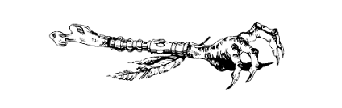
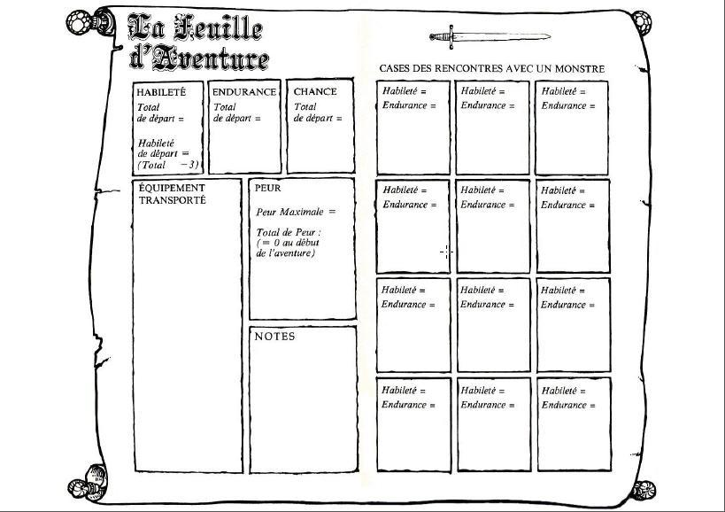

Les règles du jeu du Manoir de l'Enfer diffèrent quelque peu de celles des autres livres dont vous êtes le héros. En effet, au début de cette aventure, vous n'aurez pas d'armes, vous n'aurez pas de provisions, et vous ne disposerez d'aucune potion. De plus, vous risquerez à tout moment de mourir de peur. Avant de vous lancer dans cette aventure, il vous faut d'abord déterminer vos propres forces et faiblesses. Les dés vous permettront de mesurer la bravoure, la chance, ainsi que l'esprit d'initiative qui sont les vôtres, en déterminant les points dont vous disposerez au départ en matière d'HABILETÉ, d'ENDURANCE et de CHANCE. En pages 10 et 11, vous trouverez une Feuille d'Aventure que vous utiliserez pour noter les détails de cette aventure. Vous pourrez inscrire dans les différentes cases vos points d'HABILETÉ, d'ENDURANCE et de CHANCE.
Nous vous conseillons de noter vos points sur cette Feuille d'Aventure avec un crayon ou, mieux, de faire des photocopies de ces deux pages afin de pouvoir les utiliser lorsque vous jouerez à nouveau.
Lancez un dé. Ajoutez 6 au chiffre obtenu et inscrivez le total dans la case HABILETÉ de la Feuille d'Aventure, après la mention : Total de départ. Comme vous ne disposerez d'aucune arme au début de cette aventure (mais vous aurez la possibilité d'en trouver par la suite) votre Habileté de départ sera inférieure à votre Total de départ (voir le paragraphe intitulé Armes , page 16).
Lancez ensuite les deux dés. Ajoutez 12 au chiffre obtenu et inscrivez le total dans la case ENDURANCE.
Il existe également une case CHANCE. Lancez à nouveau un dé, ajoutez 6 au chiffre obtenu et inscrivez le total dans la case CHANCE.
Pour des raisons qui vous seront expliquées plus loin, les points d'HABILETÉ, d'ENDURANCE et de CHANCE changent constamment au cours de l'aventure. Vous devrez garder un compte exact de ces points et nous vous conseillons à cet effet d'écrire vos chiffres très petit dans les cases, ou d'avoir une gomme à portée de main. Mais n'effacez jamais vos points de départ. Bien que vous puissiez obtenir des points supplémentaires d'HABILETÉ, d'ENDURANCE et de CHANCE, ce total n'excédera jamais vos points de départ, sauf en de très rares occasions qui vous seront alors signalées sur une page particulière. Vos points d'HABILETÉ reflètent votre art dans le maniement des armes les plus diverses et votre adresse au combat en général ; plus ils sont élevés, mieux c'est. Vos points d'ENDURANCE traduisent votre force, votre volonté de survivre, votre détermination et votre forme physique et morale en général ; plus vos points d'ENDURANCE sont élevés, plus vous serez capable de survivre longtemps. Avec vos points de CHANCE, vous saurez si vous êtes naturellement chanceux ou malchanceux. La chance et la magie sont des réalités de la vie dans l'univers imaginaire que vous allez découvrir.
Il vous sera souvent demandé, au long des pages de ce livre, de combattre des créatures de toutes sortes. Parfois, vous aurez la possibilité de choisir la fuite, sinon — ou si vous décidez de toute façon de combattre —, il vous faudra mener la bataille comme suit :
Tout d'abord, vous inscrirez les points d'HABILETÉ et d'ENDURANCE de la créature dans la première case vide des Rencontres avec un Monstre, sur votre Feuille d'Aventure. Les points correspondant à chaque créature sont donnés dans le livre chaque fois que vous faites une rencontre.
Le combat se déroule alors ainsi :
1. Jetez les deux dés pour la créature. Ajoutez ses points d'HABILETÉ au chiffre obtenu. Ce total vous donnera la Force d'Attaque de la créature.
2. Jetez les deux dés pour vous-même. Ajoutez le chiffre obtenu à vos propres points d'HABILETÉ. Ce total représente votre Force d'Attaque.
3. Si votre Force d'Attaque est supérieure à celle de la créature, vous l'avez blessée. Passez à l'étape n°4. Si la Force d'Attaque de la créature est supérieure à la vôtre, c'est elle qui vous a blessé. Passez à l'étape n° 5. Si les deux Forces d'Attaque sont égales, vous avez chacun esquivé les coups de l'autre — reprenez le combat en recommençant à l'étape n° 1.
4. Vous avez blessé la créature, vous diminuez donc de 2 points son ENDURANCE. Vous pouvez également vous servir de votre CHANCE pour lui faire plus de mal encore (voir page 17).
5. La créature vous a blessé ; vous ôtez alors 2 points à votre ENDURANCE. Vous pouvez également faire usage de votre CHANCE (voir page 17).
6. Modifiez votre score d'ENDURANCE ou celui de la créature, selon le cas (faites de même pour vos points de CHANCE si vous en avez fait usage — voir page 17.)
7. Commencez le deuxième Assaut (en reprenant les étapes de 1 à 6). Vous poursuivrez ainsi l'ordre des opérations jusqu'à ce que vos points d'ENDURANCE ou ceux de la créature que vous combattez aient été réduits à zéro (mort)
Au cours d'une aventure, vous ne pouvez survivre que si votre total d'ENDURANCE est supérieur a zéro. Dans Le Manoir de l'Enfer, vous devrez éviter, de plus, de mourir de peur. Jetez un dé, et ajoutez 6 au résultat obtenu. Le total vous indiquera la Peur Maximale que vous pourrez supporter. Inscrivez-le dans la case peur de la Feuille d'Aventure. Le Total de Peur représente le nombre de points de peur que vous pouvez accumuler avant de mourir de peur. Au début de cette aventure, votre Total de peur est égal à zéro. Mais au long des pages qui vont suivre, vous allez être confronté à certaines situations où il vous sera dit : « Ajoutez 1, 2, etc. points à votre Total de Peur. » Vous modifierez alors ce total en fonction des instructions qui vous auront été données. Si, à un moment ou un autre, votre Total de Peur vient à égaler votre Peur Maximale, vous mourrez de peur et votre aventure sera alors terminée. Notez bien que la PEUR se calcule d'une façon inverse de I'ENDURANCE, l'HABILETÉ et la CHANCE au départ, votre Total de Peur est égal à zéro, et il augmente au fur et à mesure du déroulement du jeu, alors que dans le même temps les autres totaux diminuent.
A certaines pages, vous aurez la possibilité de fuir un combat s'il vous semble devoir mal se terminer pour vous. Si vous prenez la fuite, cependant, la créature vous aura automatiquement infligé une blessure tandis que vous vous échappez (vous ôterez alors 2 points à votre ENDURANCE). C'est le prix de la couardise. Pour cette blessure, vous pourrez toutefois vous servir de votre CHANCE selon les règles habituelles (voir ci- dessous). La Fuite n'est possible que si elle est spécifiée à la page où vous vous trouverez.
Si vous croisez plus d'une créature, lors de certaines rencontres, vous lirez à la page correspondante les instructions qui vous permettront de mener la bataille. Parfois, vous les affronterez comme si elles n'étaient qu'un seul monstre ; parfois, vous les combattrez une par une.
Comme dans les autres livres dont vous êtes le héros, votre HABILETÉ reflète votre capacité à manier une arme. Cependant, au début de cette aventure qui va vous mener dans le Manoir de l'Enfer, vous ne disposerez d'aucune arme. Aussi, avant de commencer le jeu, vous devrez soustraire 3 points de votre Total d'habileté.
Notez le chiffre obtenu dans la case HABILETÉ de la Feuille d'Aventure à la rubrique intitulée Habileté de Départ. Mais ne modifiez pas votre Total d'habileté, car il vous indiquera toujours l’HABILETÉ maximale qui est la vôtre, et vous sera nécessaire dans diverses circonstances qui vous seront précisées au cours du jeu. Si vous trouvez une ARME (ce mot sera alors imprimé en lettres capitales) au cours de votre aventure, il vous sera indiqué de combien de points cette ARME augmentera votre HABILETÉ: vous ajouterez ces points à votre Habileté de Départ, et non à votre Total d'habileté.
A plusieurs reprises au cours de votre aventure, lors de batailles ou dans des situations qui font intervenir la chance ou la malchance (les détails vous seront donnés dans les pages correspondantes), vous aurez la possibilité de faire appel à votre chance pour essayer de rendre une issue plus favorable. Mais, attention, l'usage de la chance comporte de grands risques ! Et, si vous êtes malchanceux, les conséquences pourraient se révéler désastreuses.
Voici comment on peut se servir de la chance : jetez deux dés. Si le chiffre obtenu est égal ou inférieur à vos points de CHANCE, vous êtes chanceux, et le résultat tournera en votre faveur. Si le chiffre est supérieur à vos points de CHANCE, vous êtes malchanceux et vous serez pénalisé.
Cette règle s'intitule : tentez votre Chance. Chaque fois que vous Tenterez votre chance, il vous faudra ôter 1 point à votre total de CHANCE. Ainsi, vous vous rendrez bientôt compte que plus vous vous fierez à votre chance, plus vous courrez de risques.
A certaines pages du livre, il vous sera demandé de tenter votre Chance et vous serez averti de ce qui vous arrivera selon que vous serez chanceux ou malchanceux. Lors des batailles, cependant, vous pourrez toujours choisir d'utiliser votre chance soit pour infliger une blessure plus grave à une créature que vous venez de blesser, soit pour minimiser les effets d'une blessure qu'une créature vient de vous infliger.
Si vous venez de blesser une créature, vous pouvez tenter votre Chance à la manière décrite plus haut. Si vous êtes chanceux, vous avez infligé une blessure grave et vous pouvez ôter 2 points de plus au score d'ENDURANCE de la créature. Si vous êtes malchanceux, cependant, la blessure n'était qu'une simple écorchure, et vous devez rajouter 1 point au score d'ENDURANCE de la créature (c'est-à-dire qu'au lieu d'enlever les 2 points correspondant à la blessure, vous n'aurez ôté que 1 seul point.)
Si la créature vient de vous blesser, vous pouvez tenter votre Chance pour essayer d'en minimiser les effets. Si vous êtes chanceux, vous avez réussi à atténuer le coup. Rajoutez alors 1 point d'ENDURANCE (c'est-à-dire qu'au lieu de 2 points ôtés à cause de la blessure, vous n'aurez que 1 point en moins). Si vous êtes malchanceux, le coup que vous avez pris était plus grave. Dans ce cas, enlevez encore 1 point à votre ENDURANCE.
Rappelez-vous que vous devez soustraire 1 point de votre total de CHANCE chaque fois que vous tentez votre Chance.
Vos points d'HABILETÉ, d'ENDURANCE et de CHANCE peuvent changer au cours de votre aventure. Votre HABILETÉ augmentera (ou plus exactement votre Habileté de Départ), si vous trouvez une ARME. Votre ENDURANCE diminuera lorsque vous combattrez les créatures du Manoir, mais pourra augmenter si vous trouvez des provisions ou si vous avez la possibilité de vous reposer (ces deux derniers cas vous seront alors indiqués,). Votre CHANCE diminuera également puisque, vous perdez 1 point chaque fois que vous tentez votre Chance. Mais elle augmentera au cours de rencontres favorables, ou lors de la découverte d'objets utiles à la poursuite de votre aventure. Quant à votre PEUR, elle augmentera tout au long du jeu, puisque vous devrez ajouter des points à votre Total de départ chaque fois que vous serez terrorisé. Cependant, dans des circonstances particulières (par exemple lorsqu'il vous sera possible de vous reposer), qui vous seront indiquées dans le texte, vous pourrez déduire des points de votre total de peur.
Souvenez-vous enfin que vos points d'HABILETÉ, d'ENDURANCE et de CHANCE ne peuvent jamais excéder leur niveau de départ, et ce, quels que soient les points supplémentaires que vous pouvez obtenir. De même, votre Total de Départ de PEUR ne peut en aucun cas être négatifs.
